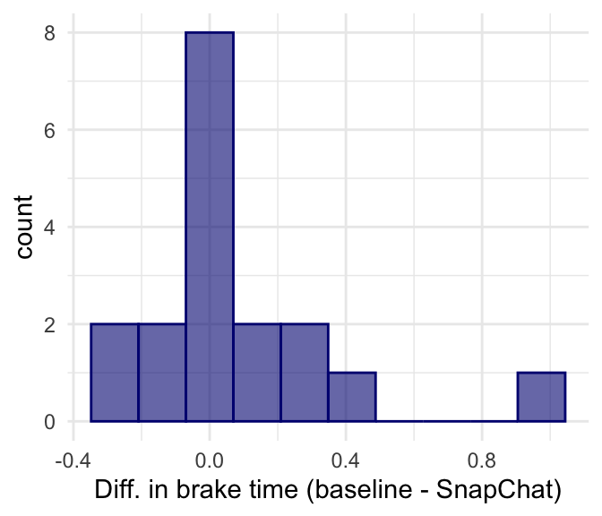

dplyr::glimpse(motivation)Rows: 47
Columns: 2
$ Score <dbl> 5.0, 5.4, 6.1, 10.9, 11.8, 12.0, 12.3, 14.8, 15.0, 16.8, 17.…
$ Treatment <fct> Extrinsic, Extrinsic, Extrinsic, Extrinsic, Extrinsic, Extri…Stat 250
What questions do you have from last class, including the extra examples?
Data frame with 47 rows and two columns
y <- motivation$Score # vector with response variable
n <- nrow(motivation) # total sample size
ngrp1 <- 24 # sample size for group 1
N <- 10^4 - 1 # number of resamples
result <- numeric(N) # place to store results
for(i in 1:N) {
index <- sample(n, size = ngrp1, replace = FALSE)
result[i] <- mean(y[index]) - mean(y[-index])
}Be sure to look at the alternative hypothesis to select the inequality (tail)
Example: Hearing loss in U.S. teens, 1988-1994 vs. 2005-06
y <- hearing_loss$hloss # vector with response variable
n <- nrow(hearing_loss) # total sample size
ngrp1 <- 2928 # sample size for group 1
N <- 10^4 - 1 # number of resamples
result <- numeric(N) # place to store results
for(i in 1:N) {
index <- sample(n, size = ngrp1, replace = FALSE)
result[i] <- mean(y[index] == "yes") - mean(y[-index] == "yes")
}Be sure to look at the alternative hypothesis to select the inequality (tail)
Every time you run sampling code you will received a different random sample unless you set the seed (random number generator state).
Work through the R examples.
Data are paired if the groups being compared are clearly linked
Which of the following scenarios should be analyzed as paired data?
Students take an MCAT prep course. Their before and after scores are compared.
20 first-year and 20 second-year students in class take a midterm. We compare their scores.
A group of freshman are asked about the quality of food on campus. A year later, the same students are asked this question again. Do student’s opinions change over time?
Previous research on smart phone use while driving has primarily focused on phone calls and texting.
Study looked at the effects of different smart phone tasks on car-following performance in a driving simulator.
Drivers performed driving only baseline simulation
Drivers performed other phone tasks: texting, reading Facebook posts, exchanging photos on Snapchat, viewing updates on Instagram
Brake reaction times (in seconds) recorded
McNabb & Gray, “Staying Connected on the Road: A Comparison of Different Types of Smart Phone Use in a Driving Simulator,” PLoS ONE, 2016
Is it safe to look at social media while driving?
What are logical null and alternative hypotheses for this research question?
| Subject | Baseline | SnapChat | Diff |
|---|---|---|---|
| 1 | 0.863 | 0.865 | 0.002 |
| 2 | 0.847 | 0.783 | -0.063 |
| 3 | 0.836 | 0.808 | -0.028 |
| 4 | 0.655 | 1.010 | 0.354 |
| 5 | 0.900 | 0.837 | -0.063 |
| 6 | 0.957 | 1.175 | 0.218 |
| 7 | 0.780 | 0.817 | 0.037 |
| 8 | 0.954 | 0.861 | -0.094 |
| 9 | 0.970 | 0.717 | -0.253 |
| 10 | 1.102 | 1.141 | 0.039 |
| 11 | 0.925 | 0.583 | -0.342 |
| 12 | 0.833 | 0.883 | 0.050 |
| 13 | 0.833 | 0.995 | 0.161 |
| 14 | 0.773 | 0.837 | 0.064 |
| 15 | 0.914 | 1.008 | 0.095 |
| 16 | 0.858 | 1.137 | 0.278 |
| 17 | 0.822 | 1.733 | 0.911 |
| 18 | 0.963 | 0.883 | -0.079 |
For a matched pairs experiment, look at the differences between responses for each unit (pair)
Compute a new variable for differences
We use the mean difference as our test statistic

| mean | sd | n |
|---|---|---|
| 0.072 | 0.27 | 18 |
| min | Q1 | median | Q3 | max |
|---|---|---|---|---|
| -0.342 | -0.063 | 0.038 | 0.145 | 0.911 |
| Subject | Baseline | SnapChat | Diff |
|---|---|---|---|
| 1 | 0.863 | 0.865 | 0.002 |
| 2 | 0.847 | 0.783 | -0.063 |
| 3 | 0.836 | 0.808 | -0.028 |
| 4 | 0.655 | 1.010 | 0.354 |
| 5 | 0.900 | 0.837 | -0.063 |
| 6 | 0.957 | 1.175 | 0.218 |
| 7 | 0.780 | 0.817 | 0.037 |
| 8 | 0.954 | 0.861 | -0.094 |
| 9 | 0.970 | 0.717 | -0.253 |
| 10 | 1.102 | 1.141 | 0.039 |
| 11 | 0.925 | 0.583 | -0.342 |
| 12 | 0.833 | 0.883 | 0.050 |
| 13 | 0.833 | 0.995 | 0.161 |
| 14 | 0.773 | 0.837 | 0.064 |
| 15 | 0.914 | 1.008 | 0.095 |
| 16 | 0.858 | 1.137 | 0.278 |
| 17 | 0.822 | 1.733 | 0.911 |
| 18 | 0.963 | 0.883 | -0.079 |
Can’t permute one of the columns and recalculate the difference
Instead, randomly select a sign (+/-) for each difference
Use the mean difference as the test statistic
1481 simulated test statistics exceed the observed
9999 total statistics are in the null distribution
What’s the p-value?
Is there a statistical discernible difference in braking time?
Data frame with 18 rows and 6 columns
Rows: 18
Columns: 6
$ Subject <dbl> 1, 2, 3, 4, 5, 6, 7, 8, 9, 10, 11, 12, 13, 14, 15, 16, 17, 18
$ Baseline <dbl> 0.863358, 0.846684, 0.836120, 0.655340, 0.900022, 0.956534, …
$ Facebook <dbl> 1.254010, 1.100017, 1.020859, 0.864210, 0.793354, 1.252108, …
$ Texting <dbl> 1.011476, 0.900027, 1.063912, 0.973921, 0.856002, 1.178000, …
$ Instagram <dbl> 0.962927, 0.600018, 0.946600, 0.725775, 0.816683, 1.134345, …
$ SnapChat <dbl> 0.865000, 0.783353, 0.808357, 1.009547, 0.836783, 1.175025, …Diff <- brake$Diff # vector of differences
observed <- mean(Diff) # observed test stat
n <- length(Diff) # sample size
N <- 10^4 - 1 # no. of permutation resamples
set.seed(120) # set seed for reproducibility
result <- numeric(N) # place to store the results
for (i in 1:N){
swap <- sample(c(-1,1), n, replace = TRUE)
result[i] <- mean(swap * Diff)
}